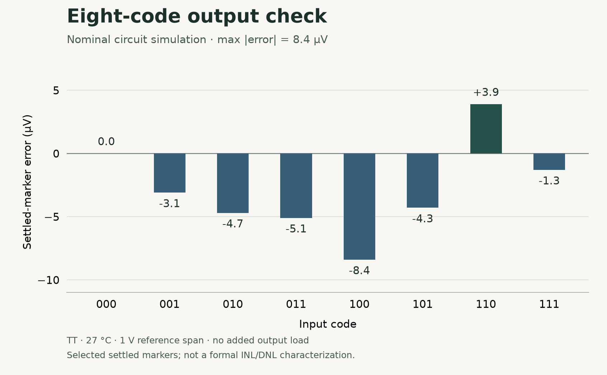
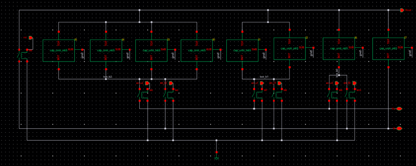
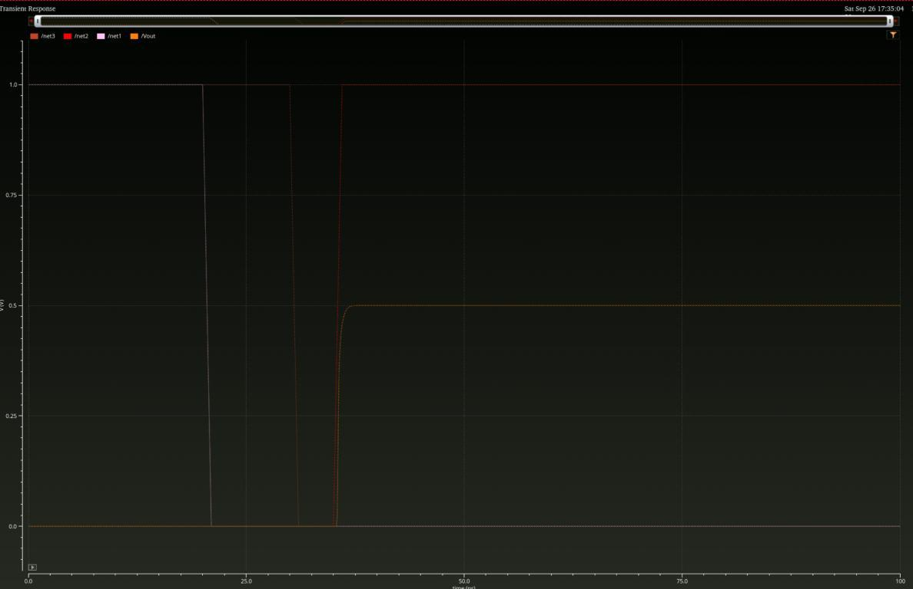
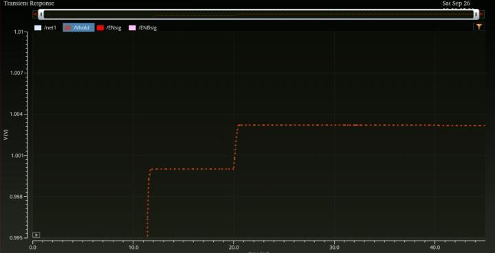
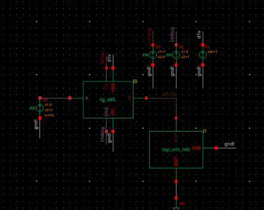
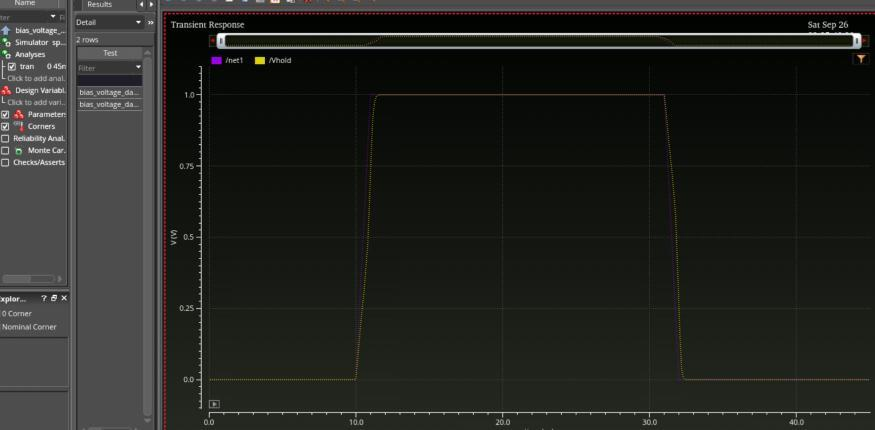

Programmable bias generation
I am developing a programmable bias-voltage DAC for cryogenic applications in Cadence Virtuoso. The design work progresses from behavioral transfer-function models to charge redistribution, transistor-level switching, and integrated circuit simulation.
The October 4 design checkpoint integrates six CMOS transmission-gate reference switches into a 3-bit TSMC 65 nm MIM-capacitor DAC and verifies all eight codes in an ascending scan. The reset switch and reference sources remain ideal, and the control sequencer is behavioral. Tape-out is planned for Spring 2027.
My contribution
I built behavioral models to examine offset, gain error, and linearity, then implemented a binary-weighted charge-redistribution DAC. After initial capacitor-array and standalone switch checks, I integrated the reference switches and evaluated the resulting output across all eight codes.
The main design question is how switching nonidealities affect both the settled output and the transitions between codes. I use separate checks for these behaviors so that a small settled error does not obscure a transient glitch.
All-code nominal simulation
At TT, 27 °C, a 1 V reference span, and no added output load, an ascending scan from 000 to 111 produces eight ordered output levels, from 0 to 875 mV. The largest absolute error at the selected settled markers is 8.4 µV.

This result checks the integrated reference-switch path under one nominal condition. The 011 → 100 transition also shows undershoot, so glitch behavior and settling still need further evaluation. Corner and mismatch characterization, extracted-parasitic verification, output-load testing, and low-temperature operation remain to be established.
Earlier block-level evidence · September 2026
The following figures document the earlier ideal-switch DAC and standalone transmission-gate experiments that led to the integrated simulation above.

In parallel, I designed and simulated a CMOS transmission gate, comparing transistor sizes and examining how the switch charges a capacitor load. The work also investigates the voltage step associated with turning the switch off.
Initial charge-redistribution DAC
For code 100, the earlier ideal-switch prototype produced 499.996 mV against a 500 mV target. This single-code result belongs to the September checkpoint; the current integrated-switch, all-code result is reported above.

Transmission-gate experiment
The standalone test compares a small-device configuration with a larger 1 µm NMOS / 2 µm PMOS configuration at 60 nm channel length. The larger devices improve the illustrated settling behavior. A separate hold experiment shows an approximately 3.2 mV turn-off voltage step.



These tests separate two design concerns: how quickly the load follows the input while the switch is on, and how much its voltage changes when the switch opens. Both informed the subsequent reference-switch integration.
The project remains in circuit design and simulation. The October checkpoint advances reference-switch integration while leaving reset implementation, broader verification, and physical design as further work.
Selected design evidence
The selected excerpts document the progression from capacitor-array and switch experiments to an integrated all-code simulation. The new summary figure reports output results without reproducing the control implementation or full development notes.
Progress documented October 4, 2026; page updated October 9, 2026.